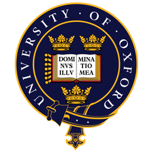
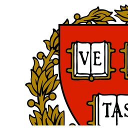
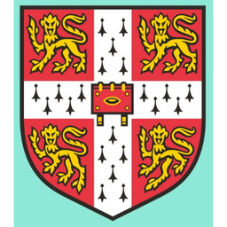
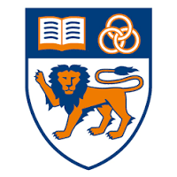

Dúnyadaǵı eń jaqsı 10 universitet
Bul bette QS World University Rankings 2027 (2026-jıl 18-iyunda járiyalanǵan) boyınsha dúnyadaǵı eń jaqsı 10 universitet berilgen. Maǵlıwmatlar universitetlerdiń rásmiy qabıllaw saytlarınan alındı (2026-jıl noyabr). Basqa reytingler (mısalı THE 2027, onda Oxford 1-orında) universitetlerdi basqasha tártipte jaylastıradı.
Múddetler, summalar hám qaǵıydalar hár jılı ózgeredi. Arza beriwden aldın universitettiń rásmiy saytın tekseriń.
 1MIT — Massachusetts Institute of TechnologyCambridge, Massachusetts, AQSh · 1861-jılı shólkemlestirilgen
1MIT — Massachusetts Institute of TechnologyCambridge, Massachusetts, AQSh · 1861-jılı shólkemlestirilgen
QS 2027: 1-orın
Qalay arza beriledi
PlatformaMIT application portal
Arza tólemi$75
Múddetler
Erte raund 01.11Ápiwayı raund 04.01
Testler hám talaplar
- SAT yamasa ACT májbúriy
- 2 muǵallim usınısı májbúriy; másláhátshi xatı májbúriy emes
- Múmkin bolsa, Educational Counselor sizge suxbat usınıwı múmkin; bolmasa, bul arzaǵa tásir etpeydi
Ingliz tili
- Ayırım ana tili ingliz bolmaǵan oqıwshılar ushın kúshli usınıladı, hámmege májbúriy emes
Pul hám járdem
- Járdem mútájlikke tiykarlanadı; MIT anıqlanǵan mútájlikti 100% jabıwın aytadı. Járdem arzası bólek: 30.11 (erte) yamasa 15.02 (ápiwayı)
Biliw paydalı
- Bir oqıw jılı ushın tek bir arza; Early Action da qabıl etilmesańız, Regular Action ǵa qayta beriw múmkin emes
 2Imperial College LondonLondon, Ullı Britaniya · 1907-jılı shólkemlestirilgen
2Imperial College LondonLondon, Ullı Britaniya · 1907-jılı shólkemlestirilgen
QS 2027: 2-orın
Qalay arza beriledi
PlatformaUCAS
Testler hám talaplar
- Kurs boyınsha talaplar ózgeshe; mámleketińiz boyınsha rásmiy betten tekseriń
Ingliz tili
- Dáreje kurs boyınsha ózgeredi; IELTS nátiyjesi 2 jıl jaramlı
Pul hám járdem
- 2027-jılı qabıllaw ushın Imperial Inspires stipendiyaları bar; qosımsha maǵlıwmat rásmiy saytta
 2Stanford UniversityStanford, California, AQSh · 1885-jılı shólkemlestirilgen
2Stanford UniversityStanford, California, AQSh · 1885-jılı shólkemlestirilgen
QS 2027: 2-orın
Qalay arza beriledi
PlatformaCommon App
Arza tólemi$100
Múddetler
Erte raund 15.10 / 01.11Ápiwayı raund 05.12 / 05.01
Testler hám talaplar
- SAT yamasa ACT májbúriy
- 2 muǵallim usınısı, másláhátshi xatı hám School Report
Ingliz tili
- Májbúriy emes, nátiyjeni ózińiz kórsete alasız; biraq ingliz tilin erkin biliw shárt
Pul hám járdem
- Xalıqaralıq oqıwshılar ushın need-blind emes: járdem sorasańız, bul qabıllawǵa tásir etedi. Qabıl etilgenlerdiń tolıq mútájligin jabadı; merit stipendiyaları joq (sportshılarǵa shekli)
Biliw paydalı
- Yarım jıllıq transkript 15.02 ge shekem; qabıl etilgenlerdiń juwap múddeti 01.05

4University of OxfordOxford, Ullı Britaniya · Sabaq beriw shama menen 1096-jıldan
QS 2027: 4-orın
Qalay arza beriledi
PlatformaUCAS
Múddetler
UCAS 15.10
Testler hám talaplar
- Testler hám suxbat kurs boyınsha ózgeredi; tańlanǵan arzashılarǵa suxbat ótkeriledi
Ingliz tili
- IELTS Academic usınıladı; IELTS Online hám IELTS General qabıl etilmeydi
Pul hám járdem
- Xalıqaralıq oqıwshı orın tastıyıqlanǵanǵa shekem oqıw hám jasaw qarjısın qalay tabıwdı kórsetiwi kerek; kurs haqı kurs boyınsha ózgeredi
Biliw paydalı
- Jılına shama menen 20 000 arza, shama menen 3 250 orın; bakalavrlardıń 20% i xalıqaralıq

5Harvard UniversityCambridge, Massachusetts, AQSh · 1636-jılı shólkemlestirilgen
QS 2027: 5-orın
Qalay arza beriledi
PlatformaCommon App
Arza tólemi$95
Múddetler
Erte raund 01.11Ápiwayı raund 01.01
Testler hám talaplar
- SAT yamasa ACT májbúriy (ayrıqsha jaǵdaylarda AP, IB yamasa milliy imtihan nátiyjeleri)
Ingliz tili
- Májbúriy emes, biraq nátiyjeni tapsıra alasız
Pul hám járdem
- Járdem barlıq puqaralıqlar ushın birdey hám mútájlikke tiykarlanǵan; Harvard anıqlanǵan mútájlikti jabadı. Qabıllaw sheshimi járdem sorawıńızǵa baylanıslı emes (shet el puqaraları ushın da)
Biliw paydalı
- Test nátiyjesin ózińiz kórsete alasız; qabıl etilip oqıwǵa kelgenlerden rásmiy nátiyje soraladı

6University of CambridgeCambridge, Ullı Britaniya · 1209-jılı shólkemlestirilgen
QS 2027: 6-orın
Qalay arza beriledi
PlatformaUCAS + My Cambridge Application
Múddetler
UCAS 15.10.2026My Cambridge Application 22.10.2026Transkript (xalıqaralıq arzashılar) 22.10.2026
Testler hám talaplar
- Ayırım kurslar ushın kirisiw testi kerek (UCAT, LNAT, ESAT, TMUA); testke UCAS múddetinen aldın dizimnen ótiw kerek bolıwı múmkin
Ingliz tili
- IELTS Academic: ádette ulıwma 7,5, hár bólimde ádette 7,0 den kem emes
Pul hám járdem
- Kurs haqı kurs boyınsha ózgeredi hám oqıw dawamında ózgermeydi; shet el tarifi menen tólewshilerge ústinlik berilmeydi
Biliw paydalı
- Xalıqaralıq hám Britaniyalı arzashılar ushın múddet birdey; aldınǵı xalıqaralıq suxbat múddeti joq
 7California Institute of Technology (Caltech)Pasadena, California, AQSh · 1891-jılı shólkemlestirilgen
7California Institute of Technology (Caltech)Pasadena, California, AQSh · 1891-jılı shólkemlestirilgen
QS 2027: 7-orın
Qalay arza beriledi
PlatformaCommon App / QuestBridge
Múddetler
Erte raund 01.11.2026Ápiwayı raund 04.01.2027Juwap beriw múddeti 01.05.2027
Testler hám talaplar
- SAT yamasa ACT májbúriy; bolsa AP yamasa IB nátiyjeleri
Ingliz tili
- Májbúriy (ingliz tilinde oqımaǵan bolsańız): IELTS 7 (hár bólimde 7) yamasa Duolingo 130 (hár bólimde 130)
Pul hám járdem
- Xalıqaralıq arzashılar ushın need-aware: járdem sorawı sheshimge tásir etiwi múmkin. Qabıl etilgenlerdiń tolıq mútájligin jabadı. Járdemdi arza beriw waqtında sorawıńız kerek
Biliw paydalı
- Qarar: erte raund — dekabr ortası, ápiwayı raund — mart ortası; juwap múddeti 01.05.2027
 8ETH ZurichZurich, Shveycariya · 1855-jılı shólkemlestirilgen
8ETH ZurichZurich, Shveycariya · 1855-jılı shólkemlestirilgen
QS 2027: 8-orın
Qalay arza beriledi
PlatformaETH online application
Múddetler
Arza múddeti 31.03
Testler hám talaplar
- Kóp shet el atestatları ushın ETH kirisiw imtihanın tapsırıw kerek (atestatqa baylanıslı)
Ingliz tili
- Nemis tili talapları arza múddetine shekem orınlanıwı kerek
Pul hám járdem
- 2025-jılı gúz semestrinen shet el atestatı menen kiretuǵınlar ushın CHF 2 190 / semestr (aldın CHF 730 edi)
Biliw paydalı
- Bakalavrda oqıw tek gúz semestrinen baslanadı
 8UCL (University College London)London, Ullı Britaniya · 1826-jılı shólkemlestirilgen
8UCL (University College London)London, Ullı Britaniya · 1826-jılı shólkemlestirilgen
QS 2027: 8-orın
Qalay arza beriledi
PlatformaUCAS
Testler hám talaplar
- Usınıs A-level jaqtan 3 pán tiykarında: standart usınıs A*A*A den ABB ge shekem, kurs boyınsha; basqa mámleket qáliplesiwleri ushın ekvivalent tekseriledi
Ingliz tili
- 5 dáreje bar, kerekli dárejeni kurs betinen tekseriń; IELTS One Skill Retake qabıl etilmeydi
Pul hám járdem
- Xalıqaralıq oqıw haqı hám stipendiyalar rásmiy saytta; kurs boyınsha ózgeredi
Biliw paydalı
- 2025-jılı qabıllaw ushın UCAS arqalı shama menen 91 000 arza keldi

10National University of Singapore (NUS)Singapore, Singapur · 1905-jılı shólkemlestirilgen
QS 2027: 10-orın
Qalay arza beriledi
PlatformaNUS Applicant Portal
Arza tólemiS$20
Múddetler
Arza dáwiri (aldınǵı jıl) 03.12.2025 – 23.02.2026
Testler hám talaplar
- SAT, AP yamasa ACT nátiyjeleri bolsa tapsırıladı; talaplar bagdarlama boyınsha ózgeredi
Ingliz tili
- IELTS yamasa TOEFL nátiyjesi bolsa tapsırıladı; ayırım bagdarlar ushın joqarı dáreje kerek
Pul hám járdem
- NUS International Undergraduate Scholarship: kandidatlar qabıllaw arzası arqalı qaraladı
Biliw paydalı
- Qabıllaw kompleks: oqıw nátiyjeleri, qızıǵıwlar hám qábiletler esapqa alınadı